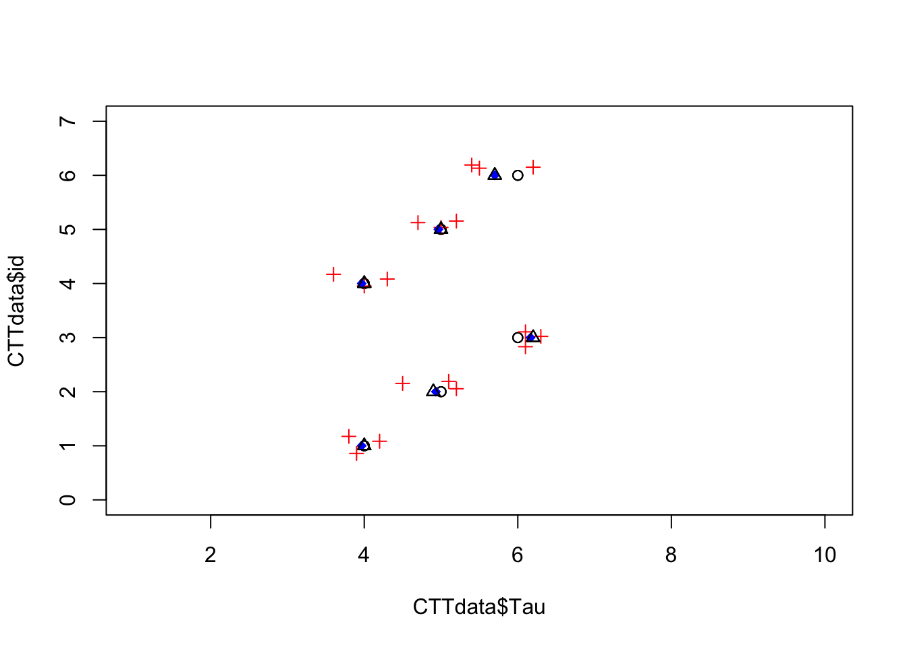
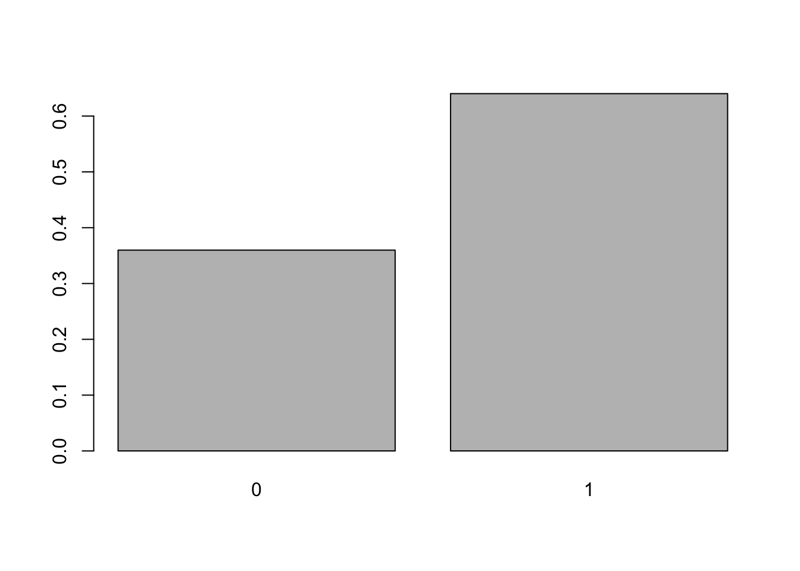
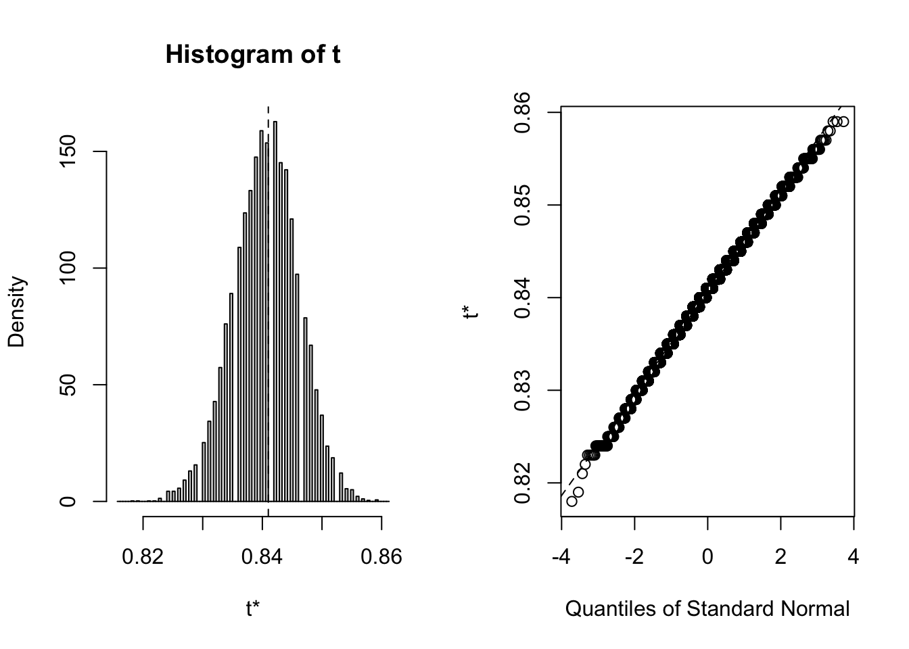

flowchart TB A[Scales of Measurement] --> B[Qualitative/Categorical] A --> C[Quantitative/Numeric] B --> D[Nominal] B --> E[Ordinal] C --> F[Interval] C --> G[Ratio]
Measurement is the quantification of theoretical constructs by means of assigning labels or numbers to observation, in a systematic way. This is one way in which we simplify reality as a means to better understand it. The vast majority, maybe all, of the constructs we want to learn about are not directly measurable. When we make measurement, we inevitably must leave out some information about what we are observing, hence simplifying it.
A very important issue in measurement is validity. Validity generally is the extent to which our measures reflect what we are attempting to measure, in a particular context. A similar concept is reliability, which deals with the consistency of our measures in a given context. If we were to take the same measurement of the same thing in the same context, we would expect to get the same measurement. To the extent that this is true, the measure is reliable. Note that to be valid an instrument must be reliable, but just because an instrument is reliable does not mean it is valid.
The concept of invariance relates to the extent to which scores on a measure are independent of examinee characteristics not relevant to the construct attempting to be measured. These characteristics can include things like gender, ethnicity, cultural background etc.
They way we quantify or classify constructs to generate measures can be classified by the scheme in the following figure.
flowchart TB A[Scales of Measurement] --> B[Qualitative/Categorical] A --> C[Quantitative/Numeric] B --> D[Nominal] B --> E[Ordinal] C --> F[Interval] C --> G[Ratio]
To understand the scales of measurement, let’s use a data example. First, we will import a small data set of questions I ask students in some of my statistics classes.
# File location on github:
file_location <- "https://raw.githubusercontent.com/wmmurrah/AdvancedMeasurementTheoryNotebook/main/data/student_survey.csv"
# Import data from csv file:
student_survey <- read.csv(file = file_location,
header = TRUE)
# View raw data
student_surveyYou can look at the codebook for this data below in section 3.5.1. We can see that all of the variables are coded as integers (see the <int> under the variable name in the data frame), with the exception of gender with is a character string (<chr>). But if you look over the variables, and read the variable descriptions in the codebook, you may realize that some of the variables are not best considered numeric. We will need to recode those variables. While we do that we will discuss scales of measurement.
For example, we can see that the sem variable quantifies the current semester (Spring, Fall, or Summer) for the student taking the survey. Here we table this variable
table(student_survey$sem)
1 2
1 54 Semester is clearly either a nominal or ordinal scale of measurement. It could be ordinal because, in a given calendar year spring comes before summer which comes before fall. But for our purposes of this survey the ordering is not important, so we will ignore it for now and create a nominal variable. In R we do this with the factor() function as follows:
student_survey$sem <- factor(student_survey$sem,
levels = c(1:3),
labels = c("Spring", "Fall", "Summer"))This code tells R to create an object in side of student_survey called sem. Because this object already exists here, this code will replace the existing object with the new one. Then the factor() function take an object as the first argument (student_survey$sem) which is the old object. So, essentially we are going take the old object turn it into a factor and replace the old object with the newly created factor. The next argument levels = c(1:3) tells R that the values of the original object are the integers 1, 2, and 3. Then, the labels = c("Spring", "Fall", "Summer") argument maps the three character strings (“Spring”, “Fall”, “Summer”) onto the integers 1, 2, and 3. The ordering of the two vectors (1, 2, and 3 on the one hand and “Spring”, “Fall”, “Summer” on the other are important. “Spring” is mapped onto 1, “Fall” onto 2, and “Summer” onto 3. After doing this we can table this variable again and see what happened.
table(student_survey$sem)
Spring Fall Summer
1 54 0 We can do something similar with the hand variable, which the codebook states captures the student’s handedness, and also is a nominal variable. But this time instead of saving the new variable over the old, I will create a new variable I will call handedness.
student_survey$handedness <- factor(student_survey$hand,
levels = c(1,2),
labels = c("left", "right"))The major difference here is on the left side of the assignment operator (<-). Instead of using the same name of the original object hand, I gave it a new name handedness. Also note that in the levels argument, instead of the 1:2 shortcut I used c(1,2), does the same thing.
table(student_survey$handedness)
left right
4 51 We have two more nominal variables gender and course. Next, let’s recode gender. Because this variable contains character strings, which we can use as the labels, the code is simpler, we do not have to pass the levels or labels arguments.
student_survey$gender <- factor(student_survey$gender)table(student_survey$gender)
female male
16 39 Our final nominal variable is course, which measures which course the student taking the survey was enrolled. Because the labels are a bit more cumbersome, and to keep the code readable, we will first create a vector of the labels called lbls. Then we can use that vector in the factor() function. When we are done with the lbls object we will remove it with the rm() function. Finally, we will table the new variable.
# Create temporary labels for course factor.
lbls <- c("ERMA 7200 Basic Methods in Education Research",
"ERMA 7300 Design and Analysis I",
"ERMA 7310 Design and Analysis II",
"ERMA 8340 Advanced Psychometrics")
student_survey$course <- factor(student_survey$course,
levels = c(1,2,3,4),
labels = lbls)
rm(lbls) # Remove labels object
table(student_survey$course)
ERMA 7200 Basic Methods in Education Research
0
ERMA 7300 Design and Analysis I
55
ERMA 7310 Design and Analysis II
0
ERMA 8340 Advanced Psychometrics
0 Ordinal Variables are those that have a natural order but the interval between those variables is not necessary the same across the different values. It the student survey data an example is birth which measured the birth order of students.
student_survey$birth <- ordered(student_survey$birth)
table(student_survey$birth)
1 2 3 4 5 6
25 10 8 5 1 1 The last 20 variables of the student survey are question that ask about research and statistics. These are also measured as integers but should be ordinal variables. Creating a vector of labels as we did with the course variable, is also useful when you need to recode several variables with the same labels, such as in a set of variables that use the same Likert scale, as is the case for the Research and Statistics questions in the student survey. Below, we again create a object called lbls with the Likert labels. Then we create a vector of the column numbers that contain the Likert items, which are the 15th through the 31st columns, and name it cols. In R the square brackets are indexing functions and it allows us to use only a subset of the columns in the data frame. Then we use the lapply to repeat the factor() function for each of the Likert columns.
# Likert labels
lbls <- c("strongly disagree", "disagree", "neither agree/disagree",
"agree", "strongly agree")
# Column numbers containing Likert variables.
cols <- 12:31
# Use indexing to transform all Likert items to ordered factor.
student_survey[ ,cols] <- lapply(student_survey[ ,cols],
function(x) factor(x,
levels = c(1,2,3,4,5),
labels = lbls,
ordered = TRUE))Note that to make a function ordered, which is the way to create ordinal variables in R, you pass the value TRUE to the ordered function. It will use the order of levels to order the values.
Here is the new dataframe
student_surveyThe true score model is: \[ X = T + E \tag{1} \] where \(X\) is the observed score, \(T\) is the true score, which is unknown, and \(E\) is the error
Four assumptions to the model above:
\(E(X) = T\), the expected value of the observed score \(X\) is the true score \(T\).
\(Cov(T,E) = 0\), the true score ane error are independent(not correlated)
\(Cov(E_1, E)2 = 0\), errors across test forms are independent.
\(Cov(E_1, T_2) = 0\), error on one form of test is independent of the true score on another form.
Which leads to a re-expression of equation (1) above:
\[ \sigma^2_X = \sigma^2_T + \sigma^2_E \]
To demonstrate this let’s assume we have the following data 1 , which was generated to meet these assumptions.
# Filepath to data on github.
filepath <- "https://raw.githubusercontent.com/wmmurrah/AdvancedMeasurementTheoryNotebook/main/code/generateToy_CTTdata.R"
source(filepath)
CTTdata id time x1 x2 x3 x4 x5 x6 x7 x8 x9 x10 Tau
1 1 1 3 6 5 3 5 5 4 5 3 3 4
2 1 2 6 3 5 3 4 2 4 4 3 5 4
3 1 3 4 4 2 4 4 3 5 3 4 5 4
4 2 1 3 6 8 6 5 4 5 5 5 5 5
5 2 2 6 4 6 6 4 6 6 5 4 4 5
6 2 3 4 6 6 5 5 5 1 3 6 4 5
7 3 1 6 5 6 6 6 6 9 6 6 5 6
8 3 2 6 6 6 7 5 6 6 6 6 7 6
9 3 3 6 5 8 6 6 6 7 7 5 7 6
10 4 1 4 3 5 4 2 3 3 5 5 2 4
11 4 2 4 5 5 4 5 5 3 5 3 4 4
12 4 3 2 4 4 4 6 4 3 4 5 4 4
13 5 1 5 6 5 4 5 5 5 6 5 6 5
14 5 2 6 6 4 6 4 5 4 5 5 5 5
15 5 3 6 4 5 4 5 5 4 4 5 5 5
16 6 1 6 6 7 8 6 6 7 6 6 4 6
17 6 2 4 5 7 5 5 7 4 5 6 7 6
18 6 3 5 6 6 6 4 5 4 5 7 6 6where id is a variable indicating individual test-takers, time indicated which of 3 times each individual was assessed, x1 - x10 are the scores on 10 items that comprise the test, and Tau is the true value of the individuals ability. I use Tau here instead of T, because T is a protected symbol in R which is short-hand for TRUE. Note that we would not know Tau in most situations, but because this is simulated data we will pretend we do.
We can create a composite score for the ten items for each individual on each occasion by averaging columns 3 through 12.
CTTdata$X <- rowMeans(CTTdata[ ,3:12])And we can also create E, the error with:
CTTdata$E <- CTTdata$X - CTTdata$TauAgain, in practice we would not be able to directly compute E because we would not know Tau, but we will use it to build an understanding of what error is.
Now we have:
CTTdata id time x1 x2 x3 x4 x5 x6 x7 x8 x9 x10 Tau X E
1 1 1 3 6 5 3 5 5 4 5 3 3 4 4.2 0.2
2 1 2 6 3 5 3 4 2 4 4 3 5 4 3.9 -0.1
3 1 3 4 4 2 4 4 3 5 3 4 5 4 3.8 -0.2
4 2 1 3 6 8 6 5 4 5 5 5 5 5 5.2 0.2
5 2 2 6 4 6 6 4 6 6 5 4 4 5 5.1 0.1
6 2 3 4 6 6 5 5 5 1 3 6 4 5 4.5 -0.5
7 3 1 6 5 6 6 6 6 9 6 6 5 6 6.1 0.1
8 3 2 6 6 6 7 5 6 6 6 6 7 6 6.1 0.1
9 3 3 6 5 8 6 6 6 7 7 5 7 6 6.3 0.3
10 4 1 4 3 5 4 2 3 3 5 5 2 4 3.6 -0.4
11 4 2 4 5 5 4 5 5 3 5 3 4 4 4.3 0.3
12 4 3 2 4 4 4 6 4 3 4 5 4 4 4.0 0.0
13 5 1 5 6 5 4 5 5 5 6 5 6 5 5.2 0.2
14 5 2 6 6 4 6 4 5 4 5 5 5 5 5.0 0.0
15 5 3 6 4 5 4 5 5 4 4 5 5 5 4.7 -0.3
16 6 1 6 6 7 8 6 6 7 6 6 4 6 6.2 0.2
17 6 2 4 5 7 5 5 7 4 5 6 7 6 5.5 -0.5
18 6 3 5 6 6 6 4 5 4 5 7 6 6 5.4 -0.6Look over the last three columns and make sure you understand their relation. For example, in the first row, note that X is .2 points above Tau, which is exactly the value of E we computed (\(X_1 - T_1 = E_1 = 4.2 - 4 = .2\)). The 1 subscript in the previous expression indicated row 1 (i.e. i = 1).
CTTdata$X_t <- round(ave(CTTdata$X, CTTdata$id, FUN = mean),1)CTTdata id time x1 x2 x3 x4 x5 x6 x7 x8 x9 x10 Tau X E X_t
1 1 1 3 6 5 3 5 5 4 5 3 3 4 4.2 0.2 4.0
2 1 2 6 3 5 3 4 2 4 4 3 5 4 3.9 -0.1 4.0
3 1 3 4 4 2 4 4 3 5 3 4 5 4 3.8 -0.2 4.0
4 2 1 3 6 8 6 5 4 5 5 5 5 5 5.2 0.2 4.9
5 2 2 6 4 6 6 4 6 6 5 4 4 5 5.1 0.1 4.9
6 2 3 4 6 6 5 5 5 1 3 6 4 5 4.5 -0.5 4.9
7 3 1 6 5 6 6 6 6 9 6 6 5 6 6.1 0.1 6.2
8 3 2 6 6 6 7 5 6 6 6 6 7 6 6.1 0.1 6.2
9 3 3 6 5 8 6 6 6 7 7 5 7 6 6.3 0.3 6.2
10 4 1 4 3 5 4 2 3 3 5 5 2 4 3.6 -0.4 4.0
11 4 2 4 5 5 4 5 5 3 5 3 4 4 4.3 0.3 4.0
12 4 3 2 4 4 4 6 4 3 4 5 4 4 4.0 0.0 4.0
13 5 1 5 6 5 4 5 5 5 6 5 6 5 5.2 0.2 5.0
14 5 2 6 6 4 6 4 5 4 5 5 5 5 5.0 0.0 5.0
15 5 3 6 4 5 4 5 5 4 4 5 5 5 4.7 -0.3 5.0
16 6 1 6 6 7 8 6 6 7 6 6 4 6 6.2 0.2 5.7
17 6 2 4 5 7 5 5 7 4 5 6 7 6 5.5 -0.5 5.7
18 6 3 5 6 6 6 4 5 4 5 7 6 6 5.4 -0.6 5.7\[ \text{reliability} = \frac{\sigma^2_T}{\sigma^2_X} = \frac{\sigma^2_T}{\sigma^2_T + \sigma^2_E} = \rho^2_{XT} \]
The reliability is the proportion of variance of \(T\) in \(X\), which is also the squared correlation between \(X\) and \(T\).
Tau <- CTTdata$Tau
X <- CTTdata$X
E <- CTTdata$X - CTTdata$Tauvar(Tau)/var(X)[1] 0.9170806var(Tau)/(var(Tau) + var(E))[1] 0.8898776cor(Tau, X)^2[1] 0.886766library(hemp)
split_half(CTTdata, type = "alternate")[1] 0.887coef_alpha(CTTdata)[1] 0.894plot(x = CTTdata$Tau, y = CTTdata$id, xlim = c(1,10),
ylim = c(0,7))
points(x = CTTdata$X, y = jitter(CTTdata$id), pch = 3, col = "red")
points(x = ave(x = CTTdata$X, factor(CTTdata$id), FUN = mean), y = CTTdata$id,
col = "blue", pch = 18)
points(x = CTTdata$X_t, pch = 2, factor(CTTdata$id))
In this section I wil use data from the hemp package.
library(hemp)
data("SAPA")Take a few minutes to look at the data description.
?SAPAYou can explore individual items as follows:
prop.table(table(SAPA$reason.4))
0 1
0.3598162 0.6401838 barplot(prop.table(table(SAPA$reason.4)))
You can look at the proportion correct for all items.
# Proportion correct for each item:
cbind(proportion_correct = colMeans(SAPA, na.rm = TRUE)) proportion_correct
reason.4 0.6401838
reason.16 0.6981627
reason.17 0.6973079
reason.19 0.6152331
letter.7 0.5997375
letter.33 0.5712410
letter.34 0.6132633
letter.58 0.4439344
matrix.45 0.5259357
matrix.46 0.5498688
matrix.47 0.6139199
matrix.55 0.3740157
rotate.3 0.1936967
rotate.4 0.2127380
rotate.6 0.2994091
rotate.8 0.1850394num_miss(SAPA) num_miss perc_miss
reason.4 2 0.13
reason.16 1 0.07
reason.17 2 0.13
reason.19 2 0.13
letter.7 1 0.07
letter.33 2 0.13
letter.34 2 0.13
letter.58 0 0.00
matrix.45 2 0.13
matrix.46 1 0.07
matrix.47 2 0.13
matrix.55 1 0.07
rotate.3 2 0.13
rotate.4 2 0.13
rotate.6 2 0.13
rotate.8 1 0.07split_half(SAPA, type = "alternate")[1] 0.758The split-half reliability coefficient is known to be downwardly biased. The Spearman-Brown formula can adjust for this. To get the Spearman-Brown reliability estimate use the following.
split_half(SAPA, sb = TRUE)[1] 0.8623436We might wish to estimate what length of test is needed to achieve a particular reliability.
test_length(SAPA, r = .95, r_type = "split")[1] 49coef_alpha(SAPA)[1] 0.841psych::alpha(SAPA)
Reliability analysis
Call: psych::alpha(x = SAPA)
raw_alpha std.alpha G6(smc) average_r S/N ase mean sd median_r
0.84 0.84 0.85 0.25 5.3 0.006 0.49 0.25 0.23
95% confidence boundaries
lower alpha upper
Feldt 0.83 0.84 0.85
Duhachek 0.83 0.84 0.85
Reliability if an item is dropped:
raw_alpha std.alpha G6(smc) average_r S/N alpha se var.r med.r
reason.4 0.83 0.83 0.83 0.25 4.9 0.0064 0.0056 0.22
reason.16 0.83 0.83 0.84 0.25 5.0 0.0063 0.0057 0.23
reason.17 0.83 0.83 0.83 0.25 4.9 0.0064 0.0054 0.22
reason.19 0.83 0.83 0.84 0.25 5.0 0.0063 0.0057 0.23
letter.7 0.83 0.83 0.83 0.25 4.9 0.0064 0.0053 0.22
letter.33 0.83 0.83 0.84 0.25 5.0 0.0063 0.0055 0.23
letter.34 0.83 0.83 0.83 0.25 4.9 0.0064 0.0052 0.22
letter.58 0.83 0.83 0.84 0.25 4.9 0.0064 0.0058 0.22
matrix.45 0.83 0.84 0.84 0.25 5.1 0.0062 0.0057 0.24
matrix.46 0.83 0.84 0.84 0.25 5.1 0.0062 0.0056 0.23
matrix.47 0.83 0.83 0.84 0.25 5.0 0.0063 0.0059 0.22
matrix.55 0.84 0.84 0.84 0.26 5.2 0.0061 0.0054 0.25
rotate.3 0.83 0.83 0.83 0.25 5.0 0.0062 0.0042 0.24
rotate.4 0.83 0.83 0.83 0.25 4.9 0.0063 0.0044 0.23
rotate.6 0.83 0.83 0.83 0.25 4.9 0.0063 0.0049 0.23
rotate.8 0.83 0.84 0.84 0.25 5.1 0.0062 0.0044 0.24
Item statistics
n raw.r std.r r.cor r.drop mean sd
reason.4 1523 0.59 0.58 0.54 0.50 0.64 0.48
reason.16 1524 0.53 0.53 0.48 0.45 0.70 0.46
reason.17 1523 0.59 0.58 0.55 0.50 0.70 0.46
reason.19 1523 0.56 0.55 0.51 0.47 0.62 0.49
letter.7 1524 0.58 0.58 0.54 0.50 0.60 0.49
letter.33 1523 0.56 0.55 0.50 0.46 0.57 0.50
letter.34 1523 0.59 0.59 0.55 0.51 0.61 0.49
letter.58 1525 0.58 0.57 0.53 0.49 0.44 0.50
matrix.45 1523 0.51 0.50 0.44 0.41 0.53 0.50
matrix.46 1524 0.52 0.50 0.45 0.42 0.55 0.50
matrix.47 1523 0.55 0.54 0.49 0.46 0.61 0.49
matrix.55 1524 0.45 0.44 0.37 0.34 0.37 0.48
rotate.3 1523 0.51 0.53 0.50 0.43 0.19 0.40
rotate.4 1523 0.56 0.58 0.55 0.48 0.21 0.41
rotate.6 1523 0.55 0.57 0.53 0.47 0.30 0.46
rotate.8 1524 0.48 0.51 0.46 0.40 0.19 0.39
Non missing response frequency for each item
0 1 miss
reason.4 0.36 0.64 0
reason.16 0.30 0.70 0
reason.17 0.30 0.70 0
reason.19 0.38 0.62 0
letter.7 0.40 0.60 0
letter.33 0.43 0.57 0
letter.34 0.39 0.61 0
letter.58 0.56 0.44 0
matrix.45 0.47 0.53 0
matrix.46 0.45 0.55 0
matrix.47 0.39 0.61 0
matrix.55 0.63 0.37 0
rotate.3 0.81 0.19 0
rotate.4 0.79 0.21 0
rotate.6 0.70 0.30 0
rotate.8 0.81 0.19 0To get bootstraped confidence intervals for the hemp coefficient alpha.
library(boot)
alpha_fun <- function(data, row){
coef_alpha(data[row, ])
}
alpha_boot <- boot(data = SAPA, statistic = alpha_fun,
R = 1e4)
alpha_boot
ORDINARY NONPARAMETRIC BOOTSTRAP
Call:
boot(data = SAPA, statistic = alpha_fun, R = 10000)
Bootstrap Statistics :
original bias std. error
t1* 0.841 -0.0004028 0.005489842plot(alpha_boot)
boot.ci(alpha_boot, type = "bca")BOOTSTRAP CONFIDENCE INTERVAL CALCULATIONS
Based on 10000 bootstrap replicates
CALL :
boot.ci(boot.out = alpha_boot, type = "bca")
Intervals :
Level BCa
95% ( 0.829, 0.851 )
Calculations and Intervals on Original ScaleValidity is more complicated to estimate than reliability. One useful from of validity is criterion related validity which is assessed by looking at how closely aligned scores on the scale you are evaluating are with some other established measure of this construct.
data("interest")
print(cor(interest[ ,c("vocab", "reading", "sentcomp")]), digits= 2) vocab reading sentcomp
vocab 1.00 0.80 0.81
reading 0.80 1.00 0.73
sentcomp 0.81 0.73 1.00Item difficulty is an estimate of how hard a particular item is. A fairly straight-forward way to assess item difficulty is looking at the proportion of participants who answered each item correctly. If our items are score 0 or 1 for incorrect and correct answers respectively, we can calculate the column (item) means to get the proportion correct.
item_difficulty <- colMeans(SAPA, na.rm = TRUE)
round(cbind(item_difficulty), digits = 2) item_difficulty
reason.4 0.64
reason.16 0.70
reason.17 0.70
reason.19 0.62
letter.7 0.60
letter.33 0.57
letter.34 0.61
letter.58 0.44
matrix.45 0.53
matrix.46 0.55
matrix.47 0.61
matrix.55 0.37
rotate.3 0.19
rotate.4 0.21
rotate.6 0.30
rotate.8 0.19Note that a more intuitive name for this estimate would be item easiness, as the higher the number, the easier the item is. But we use item difficulty for historical reasons.
We can aslo calculate the item discrimination, which is a measure of how well an item discriminates between participants with high ability vs. those with low ability. The most common way to do this is to calcualte the point-biserial correlation between a participants score on an item and their total score.
total_score <- rowSums(SAPA, na.rm = TRUE)
item_discrimination <- cor(SAPA,
total_score,
use = "pairwise.complete.obs")
item_discrimination [,1]
reason.4 0.5875787
reason.16 0.5326660
reason.17 0.5859068
reason.19 0.5582773
letter.7 0.5835910
letter.33 0.5569431
letter.34 0.5946924
letter.58 0.5750172
matrix.45 0.5095047
matrix.46 0.5138256
matrix.47 0.5478686
matrix.55 0.4468619
rotate.3 0.5100778
rotate.4 0.5559848
rotate.6 0.5542336
rotate.8 0.4807175higher values (closer to 1.00) mean the item has good discrimination, while values close to zero suggest little or not relation, and high negative numbers, suggest that people who do well on the rest of the instrument tend to do poorly in this item. This last situation often suggests something unintended is going on with the item or, said differently, the item is not “behaving” well.
Another way to calculate discrimination of items is to calculate the item discrimination index which splits the test takers into a high and low group based on their total score and then correlate this grouping variable with each item response.
idi(SAPA, SAPA$reason.4, perc_cut = .27)Upper 27% Lower 27%
0.805136 0.194864 iri(SAPA) [,1]
reason.4 0.2820989
reason.16 0.2451971
reason.17 0.2692675
reason.19 0.2717135
letter.7 0.2865325
letter.33 0.2757209
letter.34 0.2897118
letter.58 0.2863221
matrix.45 0.2544930
matrix.46 0.2562540
matrix.47 0.2668171
matrix.55 0.2161230
rotate.3 0.2016459
rotate.4 0.2276081
rotate.6 0.2539219
rotate.8 0.1867207Finally, for multiple choice tests, you may also want look at the distractors, which are the incorrect answers to such a question. This is done by looking at barplots or the proportion of test takers that answer each choice. If there are wrong choices that many test takers select, you may want to reconsider the distractors. There may be something confusing about the choices. If you have a popular distractor and a low discrimination measure, changing the distractor may help.
Documentation for Student Survey data
This is a real data set from a survey given to graduate students in a statistics class.
Variables
Duration.inseconds. - length in seconds to complete survey.
course - Which course are you completing this survey for?
1 = ERMA 7200 Basic Methods in Education Research
2 = ERMA 7300 Design and Analysis I
3 = ERMA 7300 Design and Analysis II
4 = ERMA 8340 Advanced Psychometrics
sem - Which is the current semester? 1 = Spring, 2 = Fall, 3 = Summer
year - What is the current year (enter 4 numerals. For example 2019)?
exer - How many minutes do you exercise in a typical week?
soda - How much soda (in ounces) have you consumed in the last 24 hours?
tvmin - How many minutes of television do you watch in a typical day?
siblings - How many siblings do you have?
birth - What is your birth order among you and your siblings?
gender - what is your gender? 1 = male, 2 = female
hand - Which is your dominant hand? 1 = left, 2 = right, 3 neither/both
numTVS - How many TVs do you own?
Research and Statistics Questions
1 = Strongly agree, 2 = Disagree, 3 = Neither agree/disagree,
4 = Agree, 5 = Strongly agree
stats_1 - Involvement in research will enhance my job/career opportunities.
stats_2 - People I respect would approve of my involvement in research.
stats_3 - Research involvement will allow me to contribute to practitioners’ knowledge base.
stats_4 - Doing research will increase my sense of self-worth.
stats_5 - Becoming involved research will lead to the kind of career I most want.
stats_6 - Research involvement is valued by significant people in my life.
stats_7 - My peers think highly of me if I become involved in research.
stats_8 - Research involvement will enable me to associate with the kind of people I value most.
stats_9 - Involvement on a research team leads to close personal connections.
stats_10 - Research involvement leads to a sense of satisfaction.
stats_11 - Being involved in research contributes to my development as a professional.
stats_12 - I believe research skills will be fruitful for my career.
stats_13 - My involvement in research will lead to meaningful contributions to the field.
stats _14 - Involvement in research will take time away from my significant relationships.
stats_15 - Involvement in research takes time from leisure activities.
stats_16 - Involvement in research helps me to understand the current issues in my profession.
stats _17 - My analytical skills will become more developed because of my involvement in research activities.
stats_18 - I believe that research involvement will lead to becoming well-known and respected in the field.
stats_19 - Research involvement will lead to increased financial opportunities.
stats_20 - Involvement in research will positively influence my applied skills.#------------------------------------------------------------------------
# Title: simulate_CTTdata
# Author: William Murrah
# Description: Simulate data to demonstrate CTT and reliability
# Created: Monday, 09 August 2021
# R version: R version 4.1.0 (2021-05-18)
# Project(working) directory: /Users/wmm0017/Projects/Courses/
# AdvancedMeasurementTheoryNotebook
#------------------------------------------------------------------------
simx <- function(truescore, sigmax = 1) {
x <- rnorm(18, truescore, sigmax)
return(round(x))
}
id <- rep(1:6, each = 3)
Tau <- rep(rep(4:6, each = 3),2)
set.seed(20210805)
CTTdata <- data.frame(
id = id,
time = rep(1:3, 6),
x1 = simx(Tau),
x2 = simx(Tau),
x3 = simx(Tau),
x4 = simx(Tau),
x5 = simx(Tau),
x6 = simx(Tau),
x7 = simx(Tau),
x8 = simx(Tau),
x9 = simx(Tau),
x10 = simx(Tau),
Tau = Tau
)
rm(id, Tau, simx)You can use the code below or copy the R script is at end of this chapter and store it on your computer, though you will have to adapt the code to your location↩︎